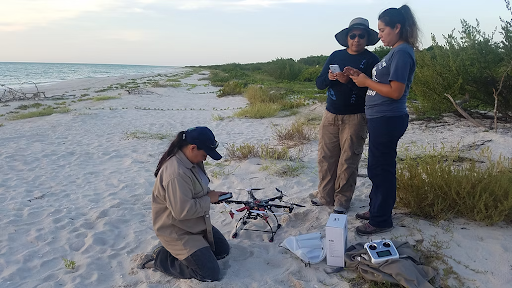

Costa Rica
Sea Turtle Drone (MiSHELL)

Through an autonomous drone system called MiSHELL, KwF helps monitor nesting sea turtles on remote beaches. The drone can track turtle activity, identify nests, monitor erosion and hatching, and alert biologists to any disturbances.